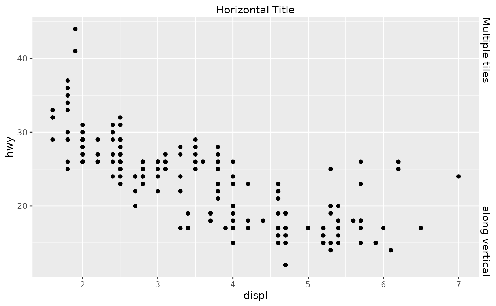

This function constructs a title guide primitive.
Arguments
- title
A
<character[1]>or<expression[1]>indicating the title of the guide. IfNULL, the title is not shown. The default,waiver(), takes the name of the scale object or the name specified inlabs()as the title.- angle
A specification for the text angle. Compared to setting the
angleargument inelement_text(), this argument uses some heuristics to automatically pick thehjustandvjustthat you probably want. Can be one of the following:NULLto take angles and justification settings directly from the theme.waiver()to allow reasonable defaults in special cases.A
<numeric[1]>between -360 and 360 for the text angle in degrees.
- theme
A
<theme>object to style the guide individually or differently from the plot's theme settings. Thethemeargument in the guide overrides and is combined with the plot's theme.- position
A
<character[1]>giving the location of the guide. Can be one of"top","bottom","left"or"right".
Styling options
Below are the theme options that determine the styling of this guide, which may differ depending on whether the guide is used in an axis or in a legend context.
See also
Other primitives:
primitive_box(),
primitive_bracket(),
primitive_labels(),
primitive_line(),
primitive_spacer(),
primitive_ticks()
Examples
# A standard plot
p <- ggplot(mpg, aes(displ, hwy)) +
geom_point()
# Adding as secondary guides
p + guides(
x.sec = primitive_title("Horizontal Title"),
y.sec = primitive_title(c("along vertical", "Multiple tiles"))
)
